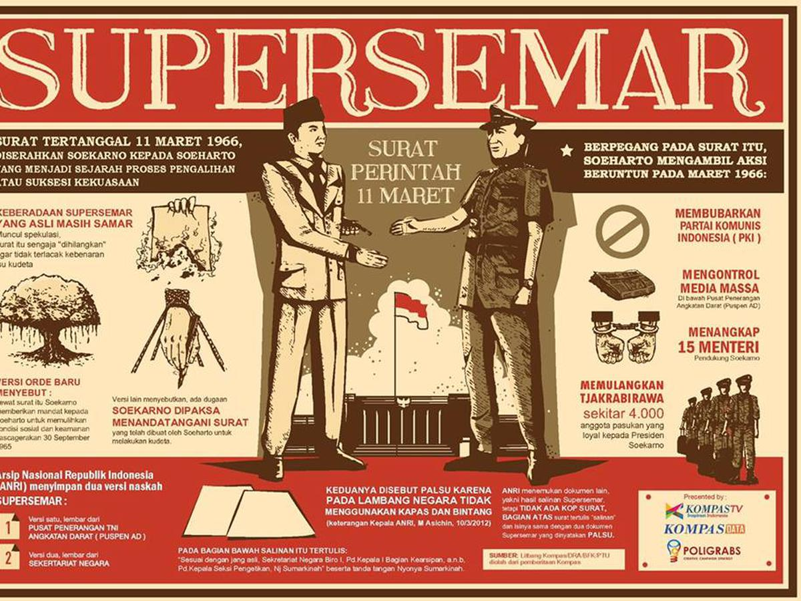

Overflow,Resize dan Opacity
Awal dari masa pemerintahan di era Orde Baru muncul
setelah dikeluarkannya surat perintah yang berlaku selama kurang lebih 32 tahun pada 11 Maret 1966 hingga 1988.
Diangkatnya Soeharto menjadi Presiden Indonesia juga menandakan era Orde Baru
menggantikan Presiden Soekarno sebelumnya.

© inisial K